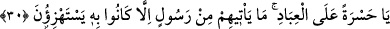
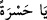
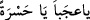
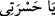

30. Ne yazık şu kullara! Onlara bir peygamber gelmeye görsün, ille de onunla
alay etmeye kalkışırlar.
“Ne yazık” küfür ve inkârda inad ve ısrâr eden “şu kullara!” Ey hasret/yazık gel, işte
bu senin gelmen için hak/uygun olan hallerdendir. Bu yazık olmanın sebebinin ne
olduğuna âyetin devamı delâlet etmektedir: “Onlara bir peygamber gelmeyegörsün,
ille de onunla alay etmeye kalkışırlar.” Çünkü iki dünya mutluluğu kendilerinin
nasîhatlerine bağlı olan nasihatçılarla alay edenler hasret/pişmanlık duymaya ve
hasret/pişmanlık duyanların da onlar için yanıp yakılmasına çok layıktırlar. Onların
hâline melekler ile insan ve cinlerin mü’minleri acırlar.
Burada “
” ifadesi onlara yapılan hasrete nidâ etmektir. Hasret ise elden çıkan
bir şey için duyulan çok şiddetli gam ve pişmanlıktır. Aslında hasret çağrılmaz ve
gelmesi istenmez. Çünkü hasret icâbet edemez. Hasrete nidâ etmenin faydası, muhâtabın
zihninde bu hâlin hasret ve hüznü gerektiren bir durum olduğunun yerleşmesi için yalnız
muhâtaba tenbih ve îkazda bulunmaktır. Zamanın hasret ve hayret zamanı olduğuna
mübâlağa ile delâlet etmesi için Araplar “
(Ey hasret, ey hayret)” derler.
Araplara göre nidâ bazen sadece tenbih ve îkaz için olur.
Kendilerine karşı işlemiş oldukları suç ve cinayetin büyüklüğünden dolayı bu hasretin
mecaz olarak Allah tarafından yapılmış olması da mümkündür. Onların kendilerine
karşı işledikleri bu suç ve cinayetin Allah tarafından büyük görülmesi, birinin elden
kaçırdığı büyük devlet sebebiyle insanın başkasına duyduğu hasrete/yanıp yakılmaya
benzetilmiştir. Çünkü bu hasret o insanın başına gelen belâ ve musibeti büyük görmeyi,
o suç ve cinayeti işlemesini ve böyle bir belâya dûçar olmasını reddetmeyi gerektirir.
Bu ifâdenin “
” diye okunması da bunu te’yid eder. Çünkü bunun mânâsı “
”
yani ey benim hasret ve hüznüm gel artık tam hasret ve hüzün vaktidir, demektir.
Bahrû’l-ulûm’da der ki: “Onlara bir peygamber gelmeye görsün, ille de onunla
alay etmeye kalkışırlar” sözü eskiden beri süregelen bir halin hikayesidir. Yani onlar
dünyada kibirlerinin fazlalığından dolayı kendilerine gelen elçilerle sürekli alay ediyor,
onları tahkir ediyor, onların din ve dâvetlerini kabul etmekten yüz çeviriyorlardı.
Burada kavminin kendisiyle alay etmesinden dolayı Peygamberimiz (s.a.) de tesellî
edilmektedir.”
Tefsîru’l-uyûn’da der ki: “Ne yazık şu kullara!” sözü onların kendilerine gönderilen
elçilerle alay etme hallerinin beyanıdır. Elçilerine îman etmedikleri için kıyamet günü
“Ne yazık ve ne pişmanlık şu kâfirlere” denir. “Onlara bir peygamber gelmeye görsün,
ille de onunla alay etmeye kalkışırlar.” sözü ise onlara gelen hasretin sebebini tefsir
etmektedir.